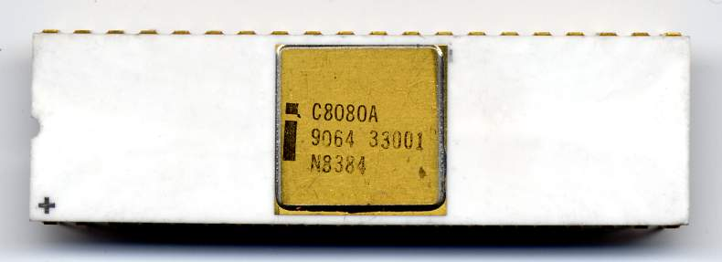
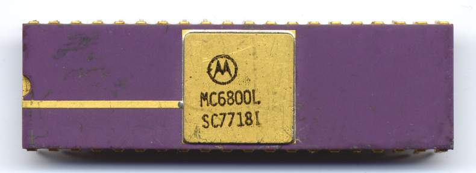
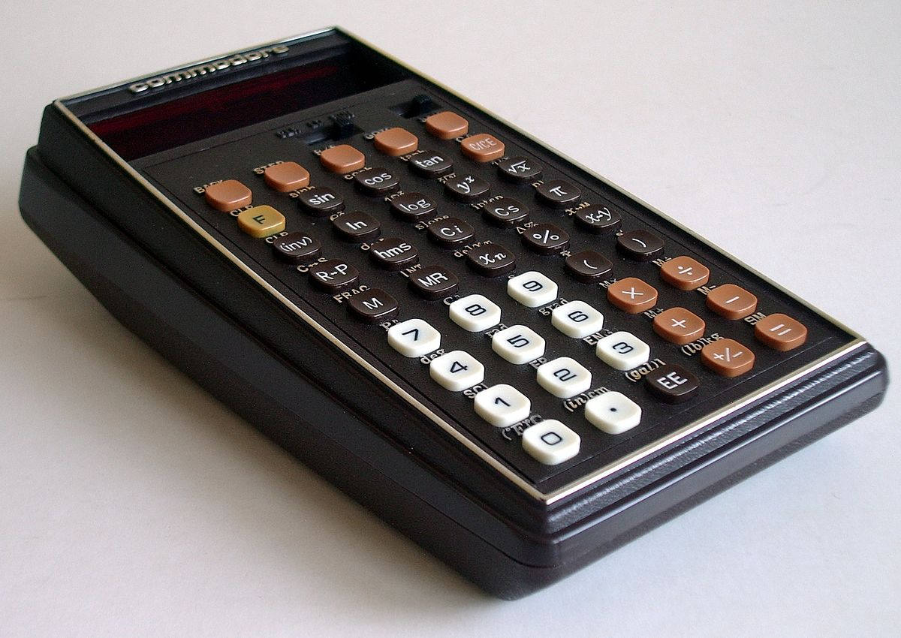
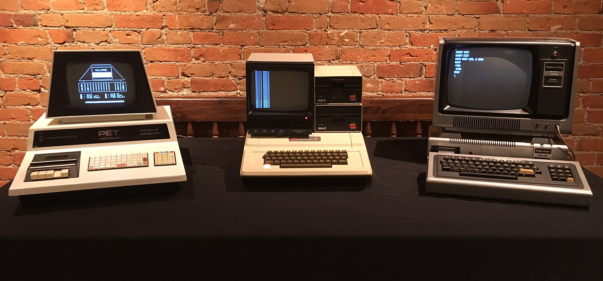
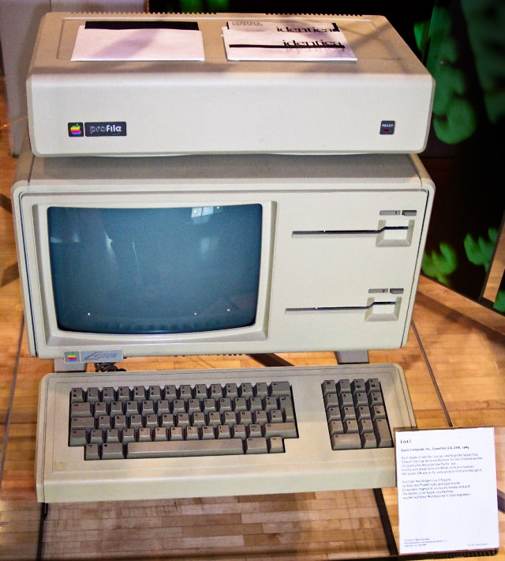

IT Archeology
or how I became a programmer
Maciej Małecki
delivery architect at
kind of experienced
1989» BASIC → 6502 Asm → Turbo Pascal → x86 Asm → C++ → Delphi → Java → JavaScript → TypeScript → Kotlin? »2019
Forgotten Hero
Photograph: DB Apple/DPA/Press Association Images

Photo courtesy of Microsoft Archives

Chuck Peddle
By Gorthmog - Own workThis file has been
extracted from another file: DEC VT100 terminal.jpg, CC BY-SA 4.0,
Link
{kind=link}
{kind=link}
Chuck joined Motorola in 1973

1972-1974: Intel 8080

1971-1975: Motorola 6800
IDEA
cheap version of MC6800
300$ → 20$
What was still booming in mid 1970?

Calculators!
MOS was focused on calculator chips
Plenty of customers, including big calculator manufacturer: Commodore

6502 Design Team (EE Times 1975, archive.archaeology.org)
By MOS_KIM-1_IMG_4211.jpg:
Rama & Musée Bolore-framing: Tomer T (talk)scale:
Rama - Ten plik jest fragmentem
innego pliku: MOS KIM-1 IMG 4211.jpg, CC BY-SA 2.0
fr, Link
{kind=link}
Two guys struggling with their design

By Photographer: Tomislav Medak from Flickr / Editing: Bill Bertram (Pixel8) - https://www.flickr.com/photos/tomislavmedak/3803230853/,
CC
BY-SA 3.0, Link
The 1977 Trinity
By Springsgrace - Own work, CC BY-SA 4.0, https://commons.wikimedia.org/w/index.php?curid=79216985
Peddle goes to Apple to join Lisa project
meanwhile Commodore sells over 1 million of VIC-20...
a record to be soon beaten by Commodore 64
1982-1994, 12.5-17 million
Peddle leaves Apple, joins Commodore again
no stock options, no compensation
finally leaves Commodore, gets sued by Tramiel
Act II
My IDE is soooo slow...
Who was the first target group of microcomputers?
engineers who wanted to write their own programs
VIC-20 + Datasette + Display
Raster time
A Carol Shaw story

https://info.umkc.edu/unews/celebrating-women-in-stem-carol-shaw/

WIKI Commons, PD


128 bytes of RAM!
Epilogue
t.b.d.